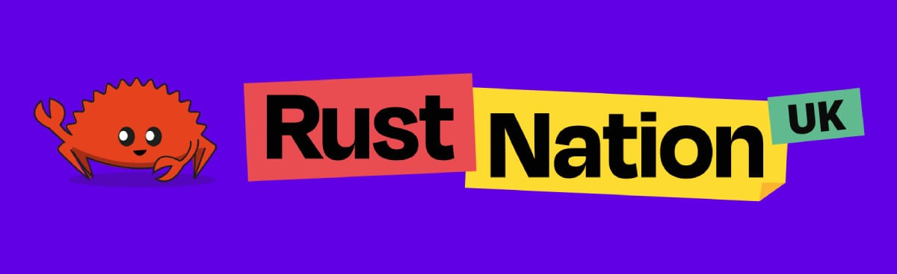
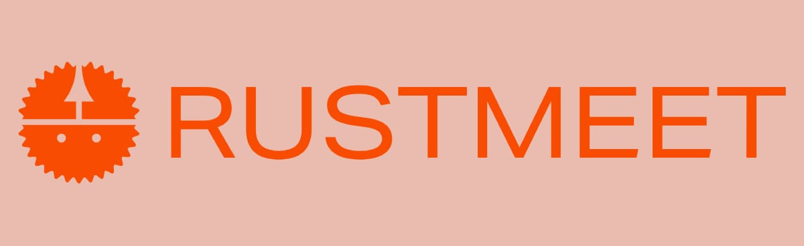
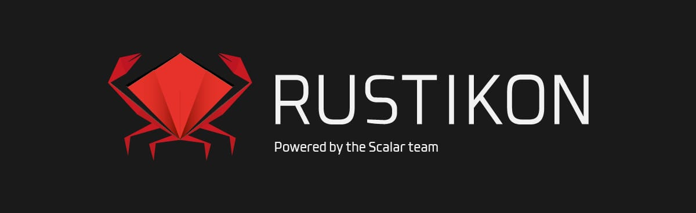
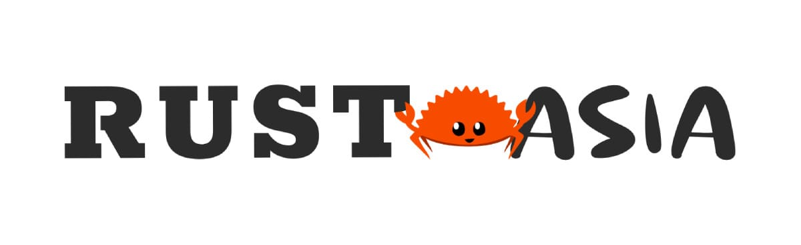
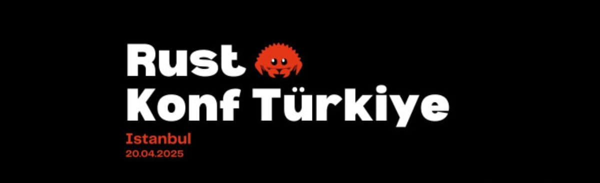
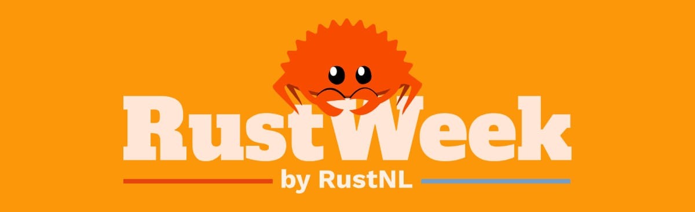
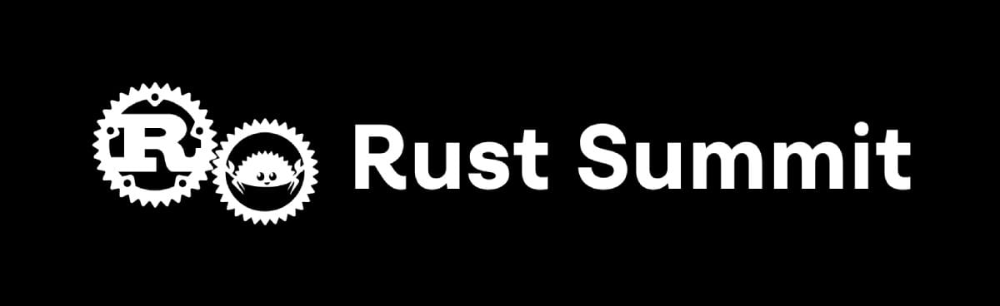
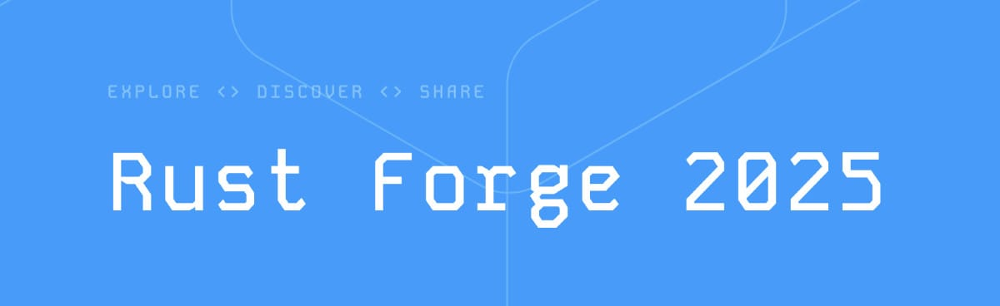
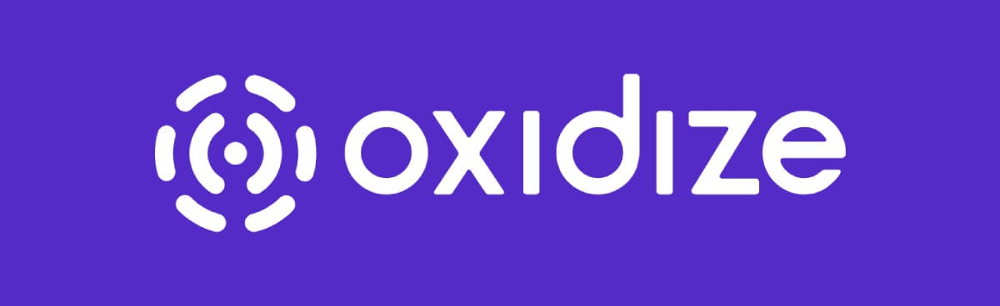
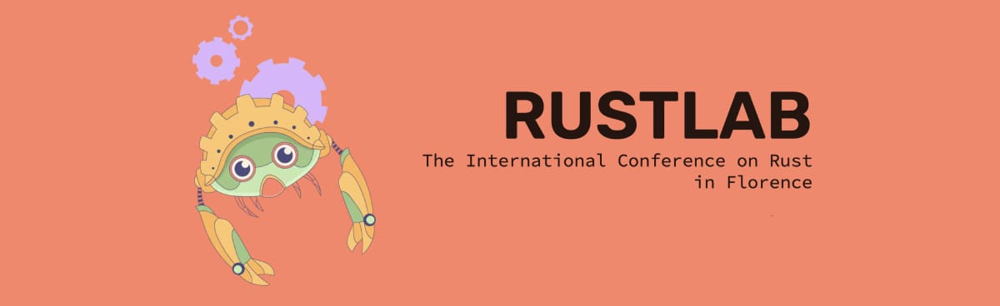

Looking for upcoming Rust conferences?
This page covers Rust conferences in 2025. For upcoming events, check out our Rust Conferences 2026 page with dates, locations, ticket prices, CFP deadlines, and more.
Rustaceans like to mingle, learn, and share their knowledge at conferences. With 13 conferences happening in 2025, it was a busy year for the Rust community.
Q1 2025
Rust Nation (London, UK)
Rust Nation has evolved into a staple event in the Rust community. The organization, speaker lineup, and recordings are always top-notch. It’s a great conference for Rust developers of all levels. As per tradition, they kick off the year of Rust conferences.
- When: February 19-20, 2025
- Where: The Brewery, 52 Chiswell Street, London, EC1Y 4SD, UK
- Format: 2 days (workshops + conference)
- Focus: Rust ecosystem and community
- Pricing:
- Conference: $304 (early bird)
- Workshops: Starting at $300
- CFP: Closed
- Links: Website | Schedule
- Social: Twitter | Mastodon
Rust in Paris (France)

“When Safety Meets Elegance” is the tagline for Rust in Paris. It features 12 speakers, 1 day of talks, and 250 attendees.
- When: March 14, 2025
- Where: Maison.A Verso, 52 rue de la victoire, 75009 Paris - France
- Format: 1 day conference
- Focus: Building secure, high-performing software with Rust
- Pricing:
- Standard: $311 (early bird)
- Student: $124
- CFP: Closed
- Links: Website | Schedule
RUSTMEET (Gliwice, Poland)
An event in Poland, actively co-created by Rust enthusiasts.
- When: March 15-16, 2025
- Where: Gliwice, Poland
- Format: 2 days (talks + workshops)
- Focus: Rust programming language
- Pricing:
- Standard: $120
- Student: $20
- CFP: Closed
- Links: Website
- Social: LinkedIn | Mastodon | BlueSky | Discord
Rustikon (Warsaw, Poland)
Aims to bring together Rust developers from the region and beyond. Expect a developer-friendly atmosphere with ~15 expert talks in a single-track format, perfect for staying connected and engaged. After a day of learning, unwind with us in a local pub and network with fellow devs.
- When: March 26, 2025
- Where: POLIN Conference Centre, Warsaw
- Format: 1 day conference
- Focus: Rust adoption in Poland and beyond
- Pricing:
- Standard: $172
- Student: $12
- CFP: Closed
- Links: Website | Tickets | Announcement
- Social: Twitter | Mastodon
RUSTAsia (Hong Kong)
Another first-time event, RUSTAsia is a conference for Rust developers in Asia. After many years without a Rust conference in Asia (the last one being RustCon Asia in 2019), the community is excited to have a new event in Hong Kong.
- When: March 28, 2025
- Where: InnoCentre, Kowloon Tong, Hong Kong
- Format: Hybrid (in-person + online)
- Focus: Rust in Asia
- Pricing:
- Online: $68
- Standard: $245 (early bird)
- VIP: $375
- Corporate: $450
- CFP: Closed
- Links: Website offline
- Social: Twitter
Q2 2025
Rust Konf Türkiye (Istanbul)
The first-ever Rust conference in Turkey, bringing together Rust developers and enthusiasts for a day of technical talks, workshops, and networking. The event will feature in-depth technical sessions on low-level programming, performance optimization, system-level development, and eBPF.
- When: April 20, 2025
- Where: Istanbul, Turkey (venue TBA)
- Format: 1 day (talks + workshops)
- Focus: Low-level programming, system development, and Rust ecosystem
- Pricing: Free
- CFP: Closed
- Links: Website
- Social: Twitter
RustWeek (Utrecht, Netherlands)
RustWeek is a week-long event that combines talks, workshops, and social events. It’s located in cozy Utrecht, the fourth-largest city in the Netherlands. This is organized by the team behind RustNL. RustWeek takes place during the 10 year anniversary of Rust 1.0. All Rustaceans are welcome to attend and submit talks.
- When: May 12-17, 2025
- Where: Kinepolis Utrecht
- Format: Full week (2 days talks + 1 day workshops + social events)
- Focus: Broad, open to everyone
- Pricing (Early Bird):
- Standard: $197
- Company: $390
- Conference + Workshop: $343 (Individual) / $592 (Company)
- Student: $31
- CfP: Closed
- Links: Website | Past Talks
- Social: BlueSky | Mastodon | LinkedIn | Twitter
Rust Summit (Belgrade, Serbia)
The first conference for Rust blockchain professionals.
The Rust Summit is first-of-its-kind chain-agnostic conference, featuring expert talks, workshops, and networking opportunities for Rust blockchain professionals. It is open to all Rust developers active in the web3 and blockchain sectors and those who are interested in it.
- When: June 7, 2025
- Where: Belgrade, Serbia
- Format: 1 day conference
- Focus: Blockchain
- Pricing: $73 (General Admission)
- CFP: Closed
- Links: Website
- Social: Twitter
Q3 2025
RustForge (Wellington, New Zealand)
RustForge is the first conference in the Asia/Pacific region that focuses on Rust.
- When: August 27-30, 2025
- Where: Shed 6, Wellington, New Zealand
- Format: 4 days (2 days workshops + 2 days conference)
- Focus: Community-focused conference with emphasis on hallway track
- Pricing:
- Conference: $225
- Workshops: $425
- Get tickets here
- CFP: Closed
- Links: Website
- Social: Twitter | LinkedIn | Instagram
RustConf (Seattle, Washington, USA)

RustConf is the official Rust conference organized by the Rust Foundation. It’s a great place to meet the Rust core team and other community members. The last edition was held in Montreal, Canada and the 2025 edition will be announced soon.
- When: September 2-5, 2025
- Where: Seattle, Washington, USA
- Format: 4 days (1 day workshops + 3 days talks)
- Focus: Official Rust conference
- Pricing:
- Regular: $525
- Corporate: $775
- Get tickets here
- CFP: Closed
- Links: Website | Past Talks
- Social: Mastodon, BlueSky
Oxidize (Berlin, Germany)
Two days of applied Rust insights from industry innovators. Topics range from cross-platform GUI development to Rust in safety-critical systems.
- When: September 16-18, 2025
- Where: Tagungswerk, Berlin, Germany
- Format: 3 days (1 day workshops + 2 days talks)
- Focus: Applied Rust insights
- Pricing:
- Conference only: €505.75
- Workshop + Conference: €653.31
- Get tickets here
- CFP: Closed
- Links: Website | Past Talks
- Social: Twitter | Mastodon
Q4 2025
EuroRust (Paris, France)

One of the largest Rust conferences in Europe and a well-established event in the Rust community. It’s a 2 day conference that covers all things Rust: from Rust patterns and idioms to system programming and CLI tooling, servers WASM and embedded systems.
The conference travels to a different European city each year. This time, it’s in Paris, France. 🥖
- When: October 9-10, 2025
- Where: Cité des Sciences et de l’Industrie, Paris, France
- Format: 2 days talks
- Focus: Rust patterns, idioms, system programming, CLI tooling, servers, WASM, embedded systems
- Pricing: Get tickets here
- CFP: Closed
- Links: Website | Past Talks
- Social: Twitter | Mastodon
RustLab (Florence, Italy)
The Italian Rust conference traditionally takes place in Florence. It’s lovingly organized featuring delicious italian food and a great community.
- When: November 2-4, 2025
- Where: Grand Hotel Mediterraneo Lungarno del Tempio, 44, 50121 Florence, Italy
- Format: 3 days (1 day workshops + 2 days talks)
- Focus: Rust in Italy and beyond
- Pricing:
- 270€ Regular Ticket
- Get tickets here
- CFP: Closed
- Links: Website | Past Talks
- Social: Twitter | Mastodon
That was the complete lineup of Rust conferences for 2025! From London to Hong Kong to Seattle, there was something for every Rustacean. See you at the next conference! 🦀